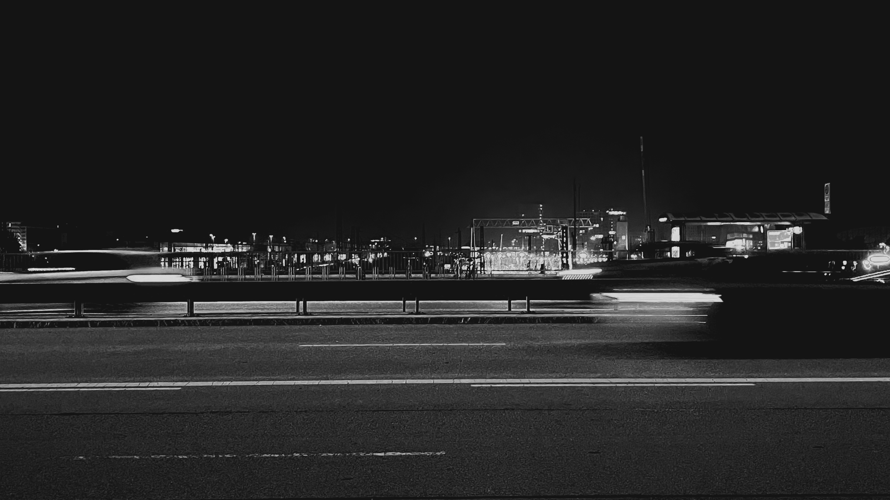

BEYOND FACADE
TOWARDS MUNICH CITY SPACE
The facade, as one of the most important elements of the building, forms
the skin of the city it belongs to. In front of the buildings, the
pictures show the relationship of the buildings with nature,
infrastructures, and people’s activities.
Urban Life
By catching more human activities happening in front of the facade, the
pictures clue the gene of the city. How do people in the city act? How
does the city influence life? How do they interact with each other? One
of the original reasons for architecture is to gather people, such as
Stonehenge. By the time people like meeting and gathering in the plaza
which surrounds by a brunch of buildings. So for today what is the role
of the facade in Munich. Maybe they are fading but there is colourful
urban life happening in front.

 48.143588N
48.143588N
11.542839W

Artificial line
There is an important line from west to east, which doesn’t grow from
the earth. Instead, it is the wisdom of the human after the Industrial
Revolution, it also hints that this city is located at a special and
central point in Europe. From1946 to1969 it is a time for Munich on the
way back to the top. At the end of the Second World War, Munich refaces
the most difficult economic period in the Company’s history to date. And
the government decided to rebuild a series of important buildings which
play different kind of role today. Due to the huge and vital
infrastructure, it could be a new “landscape” of the city.


 48.158266N
48.158266N
11.502194W
Natural line
In Munich, there is a strong line. The Isar, the most famous river,
crosses the city from south to north. An alpine river in the heart of
the city. The Isar flows through Munich from south to north over a
distance of almost 14 kilometres and, with its flat banks, gravel banks
and floodplains is today the most important central local reaction area
in Munich. The urban river restoration project has been in progress on
the River Isar since the beginning of the year 2000.
Within the scope of
the “Isar Plan” local flood protection is improved and ecologically
valuable habitats for fauna and flora are restored. At the same time,
the growing demand of city dwellers for natural landscapes in central
urban areas for leisure and recreational use is met in an ideal manner.
In all, the joint project of the State of Bavaria and the City of Munich
is more than just the restoration of a stretch of the River Isar
extending over 8 kilometres in the Munich area, it is also an investment
in the future.